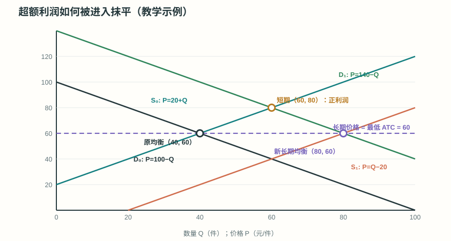
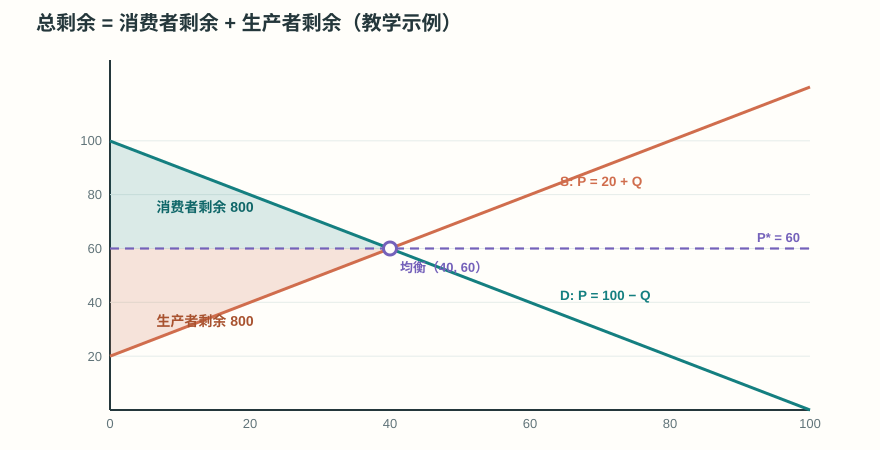

CHAPTER 14 · MICROECONOMICS
完全竞争市场（下）：均衡与效率
超额利润为什么会被竞争抹平：从短期到长期的完整周期，以及 P=MC、P=最低 ATC 与总剩余最大化之间的关系。
短期超额利润为什么留不住？
上一章看到：短期里企业数量固定，行业可能盈利也可能亏损。但进入长期，故事就变了——只要行业里还有正的经济利润，新企业就会涌入，把价格一路压到零利润为止。
用一个教学示例把四步算清楚（假设 / 教学示例）：初始需求 D₀: P=100−Q，供给 S₀: P=20+Q，交点 Q=40、P=60，而 60 恰好是各企业最低的平均总成本。(1) 需求右移到 D₁: P=140−Q；(2) 短期供给仍为 S₀，解 140−Q=20+Q 得 Q=60、P=80，高于最低 ATC，出现正经济利润；(3) 利润吸引新企业进入；(4) 供给右移到 S₁: P=Q−20，解 140−Q=Q−20 得 Q=80、P=60——价格回到原来的水平，经济利润重新归零。
进入与退出的调节机制
进入和退出是推动市场走向长期均衡的“自动阀”。逻辑链条如下：
| 市场状态 | 企业反应 | 供给 | 价格 | 结果 |
|---|---|---|---|---|
| 经济利润 > 0 | 新企业进入 | 右移 | 下降 | 利润趋近于零 |
| 经济利润 < 0 | 现有企业退出 | 左移 | 上升 | 亏损减少，利润趋近于零 |
| 经济利润 = 0 | 无进出 | 稳定 | 稳定 | 长期均衡 |
这像恒温器：温度高了制冷，低了加热，最终稳定在设定值。市场也是如此——利润高了吸引进入，低了推动退出，收敛到零经济利润的均衡点。
长期均衡：P 等于最低 ATC
长期均衡要同时满足两个条件：利润最大化要求 P = MC；自由进出导致零经济利润，又要求 P = ATC。两式相除得 MC = ATC，而这两条曲线只在 ATC 的最低点相交。于是：
在刚才的教学示例里，这个长期价格就是 60：需求增加带来的高价 80 只是短期的，进入会把它重新推回最低 ATC。

零经济利润不是“不赚钱”
“长期经济利润为零”常让人误以为企业不赚钱。这是把经济利润与会计利润混为一谈了。经济利润已经扣除了隐性成本，因此为零的真正含义是：企业恰好获得正常利润——企业家才能与自有资本的回报刚好等于它们的机会成本。
教学示例：一家店的会计利润为 20 万元/年，其中包含店主放弃的 15 万元薪资与 5 万元自有资金利息（共 20 万元隐性成本），则经济利润 = 20 − 20 = 0。银行账户上确实多出 20 万，它不是“没赚钱”，而是“与次优选择一样好”。
配置效率与生产效率
长期均衡同时实现了两种效率：
- 配置效率 allocative efficiency：P = MC。价格衡量消费者对最后一单位的边际支付意愿，MC 衡量社会多生产一单位的额外成本；两者相等时，产量恰到好处。
- 生产效率 productive efficiency：生产在 ATC 最低点进行。长期均衡下 P = MC 与 P = ATC 同时成立，所以 ATC = MC，而这只发生在 ATC 的最低点。
总剩余最大化
市场效率还可以从总剩余角度看。消费者剩余 CS 是需求曲线之下、价格线之上的面积；生产者剩余 PS 是价格线之下、供给曲线之上的面积；两者之和为总剩余。在竞争均衡处，总剩余达到最大。
沿用教学示例 D: P=100−Q 与 S: P=20+Q，均衡为 Q=40、P=60：
总剩余 = 800 + 800 = 1600。若人为把产量限制在 40 以下或推高到 40 以上，总剩余都会减少——这正是“无谓损失”的来源（详见第 7 章税收与第 15 章垄断）。

交互实验：需求变化与总剩余
竞争市场剩余实验
供给固定为 S: P=20+Q，拖动滑块改变需求截距 A（D: P=A−Q），观察均衡价格、数量与总剩余如何变化。
均衡 Q*=40，P*=60；CS=800，PS=800，总剩余=1600。
每次根据解析式重新计算，不使用随机值；默认 A=100 对应正文的 D: P=100−Q。
如果一个行业里的企业都能自由进入且技术相同，为什么长期价格不会长期高于最低 ATC，也不会长期低于它？
查看答案
若价格高于最低 ATC，正经济利润吸引新企业进入，供给右移把价格压低；若价格低于最低 ATC，企业退出，供给左移把价格推高。只有当价格等于最低 ATC（经济利润为零）时，进入与退出都停止，市场才稳定。
引用文献、定义与适用范围
本章的方程与数值（D: P=100−Q、S: P=20+Q）均为教学示例，不是观测数据；长期均衡、零经济利润与效率的概念参考以下教材：
- OpenStax · Principles of Microeconomics 3e, Ch. 7: Production, Costs, and Industry Structure
- OpenStax · Principles of Microeconomics 3e（教材首页）
本章的“总剩余最大”是在无外部性、无市场势力等假设下成立的基准结论。现实中这些假设可能不满足，不能把“完全竞争最有效率”当成对任何市场的无条件断言。